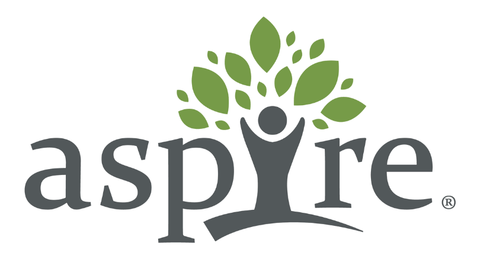
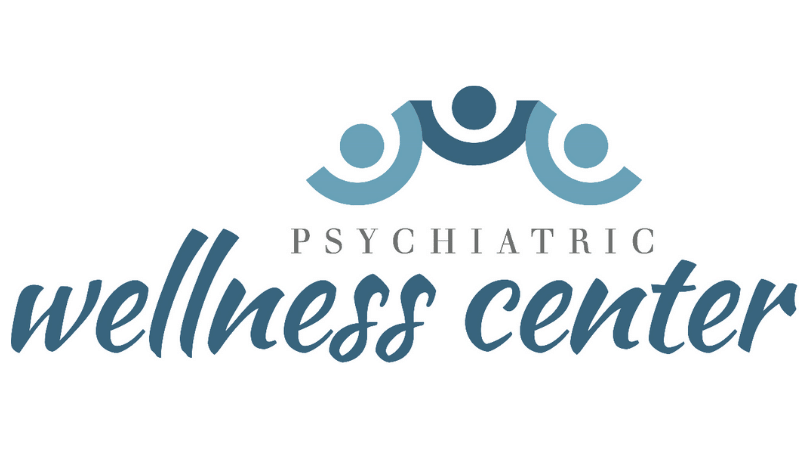
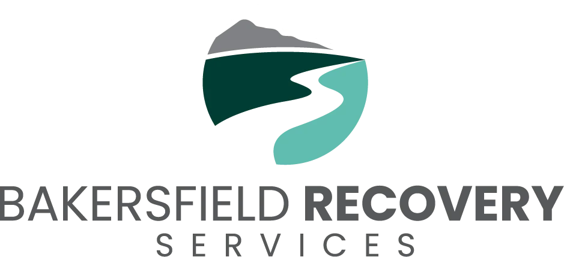

Our Organizations
Meet the behavioral health organizations we own, build, and support in the communities we serve.

Aspire Counseling Services
Substance use & behavioral healthIntensive outpatient support for individuals and families navigating substance use and behavioral health challenges.
Aspire Counseling Services provides intensive outpatient care for men, women, adolescents, and families experiencing substance use and behavioral health disorders. Its programs focus on the skills, relationships, and continued support that help people work toward long-term stability.
Visit Website
Psychiatric Wellness Center
Psychiatric careOutpatient psychiatric care built around the mental health needs of the community.
Psychiatric Wellness Center began in 1984 when Dr. Manohara opened a small office near Memorial Hospital on 34th Street. The practice grew with a focus on meeting patients’ outpatient mental health needs and coordinating inpatient care when needed, creating a comprehensive mental health delivery system for the community.
Visit Website
Bakersfield Recovery Services
Substance use disorder treatmentResidential and intensive outpatient substance use treatment focused on personal growth, accountability, and long-term recovery.
Bakersfield Recovery Services guides individuals toward a drug-free, empowered life through men’s, women’s, and perinatal residential treatment, along with intensive outpatient care. Its evidence-based programs emphasize personal growth, individual responsibility, and the coping skills that support long-term recovery. Guided by empathy, integrity, empowerment, and family and community involvement, BRS prioritizes the well-being of individuals, their families, and the community throughout the recovery journey.
- Jason’s RetreatMen’s Residential Treatment
- CapistranoWomen’s Residential Treatment
- Lincoln StreetPerinatal Residential Treatment
- IOPIntensive Outpatient Treatment
Supporting healthcare development
TPMG, LP
Real estate developmentTPMG, LP is a real estate development company focused on healthcare expansion. Its work includes medical real estate development across multiple states.
Aspire Counseling ServicesSubstance use & behavioral healthIntensive outpatient support for individuals and families navigating substance use and behavioral health challenges.
Aspire Counseling Services provides intensive outpatient care for men, women, adolescents, and families experiencing substance use and behavioral health disorders. Its programs focus on the skills, relationships, and continued support that help people work toward long-term stability.
Psychiatric Wellness CenterPsychiatric careOutpatient psychiatric care built around the mental health needs of the community.
Psychiatric Wellness Center began in 1984 when Dr. Manohara opened a small office near Memorial Hospital on 34th Street. The practice grew with a focus on meeting patients’ outpatient mental health needs and coordinating inpatient care when needed, creating a comprehensive mental health delivery system for the community.
Bakersfield Recovery ServicesSubstance use disorder treatmentResidential and intensive outpatient substance use treatment focused on personal growth, accountability, and long-term recovery.
Bakersfield Recovery Services guides individuals toward a drug-free, empowered life through men’s, women’s, and perinatal residential treatment, along with intensive outpatient care. Its evidence-based programs emphasize personal growth, individual responsibility, and the coping skills that support long-term recovery. Guided by empathy, integrity, empowerment, and family and community involvement, BRS prioritizes the well-being of individuals, their families, and the community throughout the recovery journey.
- Jason’s RetreatMen’s Residential Treatment
- CapistranoWomen’s Residential Treatment
- Lincoln StreetPerinatal Residential Treatment
- IOPIntensive Outpatient Treatment
Supporting healthcare development
TPMG, LPReal estate developmentMedical real estate development supporting healthcare expansion.
TPMG, LP is a real estate development company focused on healthcare expansion. Its work includes medical real estate development across multiple states.
Let’s Grow Together!
Get to know Genesis Medical Management and the behavioral health organizations we’re building.
Contact Us